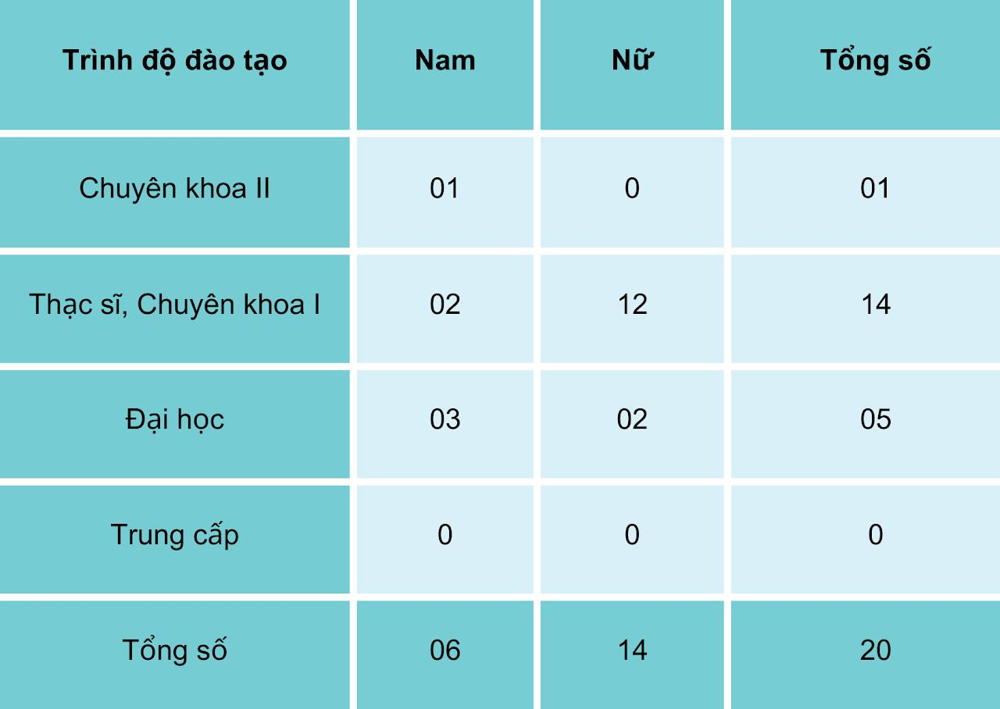
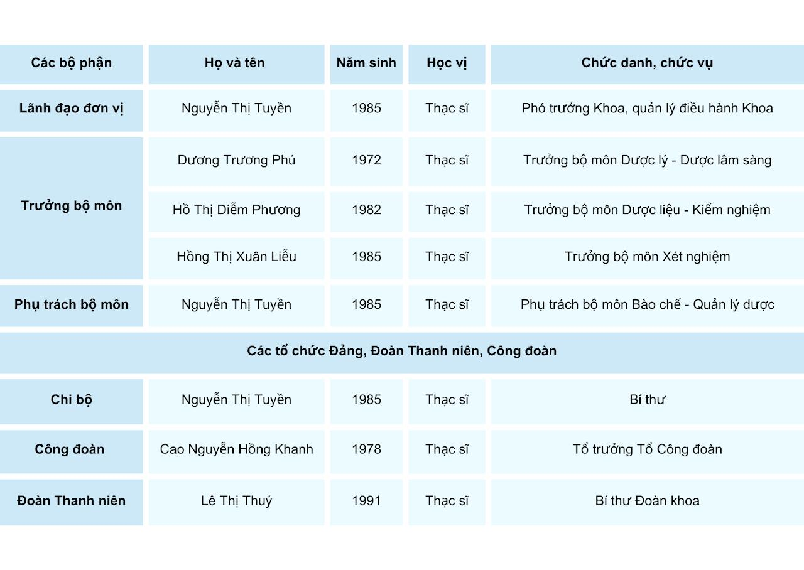

GIỚI THIỆU
- Tên đơn vị: KHOA DƯỢC - XÉT NGHIỆM
- Địa chỉ đơn vị: Trường Cao đẳng Y tế Cần Thơ
- Số điện thoại: 02923.899.017
- Email: tuyenxncmc2021@gmail.com, diemphuongcmc@gmail.com
- Năm thành lập đơn vị: 2012
I. CHỨC NĂNG
Khoa Dược - Xét nghiệm là đơn vị chuyên môn trực thuộc Trường Cao đẳng Y tế Cần Thơ, có chức năng theo quy định của Quy chế tổ chức hoạt động Trường Cao đẳng Y tế Cần Thơ và phân cấp quản lý của Hiệu trưởng, cụ thể là:
1.Tham mưu với Ban Giám hiệu về các lĩnh vực hoạt động chuyên môn của khoa và các hoạt động khác có liên quan.
2.Tổ chức thực hiện quá trình đào tạo, kế hoạch giảng dạy, học tập; tổ chức phát triển chương trình đào tạo, biên soạn giáo trình tài liệu, nghiên cứu cải tiến phương pháp giảng dạy, học tập.
3.Tổ chức triển khai hoạt động nghiên cứu khoa học, báo cáo chuyên đề, các hoạt động giáo dục về nhận thức ngành nghề trong sinh viên.
4.Tham mưu, đề xuất công tác nhân sự của khoa, khen thưởng - kỷ luật; kế hoạch đào tạo, bồi dưỡng nâng cao trình độ chuyên môn nghiệp vụ cho giảng viên, viên chức, nhân viên trong khoa.
5.Tham mưu đề xuất bổ sung tài sản, cơ sở vật chất cho hoạt động khoa, tài liệu tham khảo, phương tiện, thiết bị dụng cụ giảng dạy trong khoa.
6.Xây dựng, phát triển Khoa đáp ứng tiêu chuẩn của Trường Cao đẳng theo quy định của Bộ Lao Động Thương binh
- xã hội.
II. NHIỆM VỤ
1.Quản lý giảng viên, người lao động khác và người học thuộc khoa theo phân cấp của hiệu trưởng.
2.Tham gia xây dựng chương trình, kế hoạch giảng dạy, tổ chức thực hiện giảng dạy các môn học thuộc khoa quản lý và các hoạt động giáo dục khác trong chương trình. Tham mưu cho trường bổ sung cập nhật đề cương chương trình, ngân hàng đề thi; tài liệu; cơ sở vật chất phục vụ giảng dạy, học tập.
3.Tổ chức hoạt động khoa học và công nghệ: Thực hiện đề tài khoa học công nghệ các cấp; hướng dẫn sinh viên nghiên cứu khoa học; bồi dưỡng sinh viên giỏi; tham gia công tác phát triển quy mô tuyển sinh đào tạo.
4.Tổ chức biên soạn và thẩm định giáo trình, tài liệu tham khảo các môn học do khoa quản lý;
5.Xây dựng kế hoạch và tổ chức thực hiện công tác giáo dục chính trị tư tưởng, đạo đức, lối sống cho đội ngũ cán bộ, giảng viên, nhân viên thuộc khoa; tổ chức đào tạo, bồi dưỡng để không ngừng nâng cao trình độ về chuyên môn, nghiệp vụ cho đội ngũ nhằm đáp ứng yêu cầu của sự nghiệp đào tạo. Tiến hành đánh giá định kỳ cán bộ viên chức trong khoa để phân loại trình độ, sắp xếp công việc, nhằm đáp ứng yêu cầu cao về đào tạo và nghiên cứu khoa học.
5.Quản lý và sử dụng có hiệu quả các tài sản, thiết bị, vật tư được trang bị, mua sắm hoặc tiếp nhận từ các nguồn khác nhau theo những quy định chung của Nhà nước và những hướng dẫn cụ thể của trường.
6.Phối hợp với các phòng, khoa khác trong trường, gắn kết cộng đồng xã hội, nhà tuyển dụng, các đơn vị trong và ngoài nước liên quan đến chuyên môn của khoa.
Thực hiện một số nhiêm vụ khác theo sự phân công của Ban Giám hiệu.
III. NHÂN SỰ CỦA KHOA
- LÊ THỊ THÚY(Phụ trách bộ môn)
- Cao Nguyễn Hồng Khanh
- Nguyễn Thị Huyền Trân
- Phạm Diệu Huệ Anh
- Lê Văn Liên
- NGUYỄN VĂN CƯỜNG(Phụ trách bộ môn)
- Nguyễn Thị Thúy Nga
- Đặng Quỳnh Trân
- DƯƠNG TRƯƠNG PHÚ(Trưởng bộ môn)
- Trịnh Phước Lộc
- Đặng Thị Ngọc Yến
- Nguyễn Thị Diễm Trinh
- Ngô Trần Ái Linh
- HỒNG THỊ XUÂN LIỄU(Trưởng bộ môn)
- Nguyễn Thị Cẩm Hồng
- Lê Thị Mai Thảo
- Lê Nguyễn Ngọc Thùy
- Tăng Huỳnh Như

VIÊN CHỨC QUẢN LÝ KHOA
